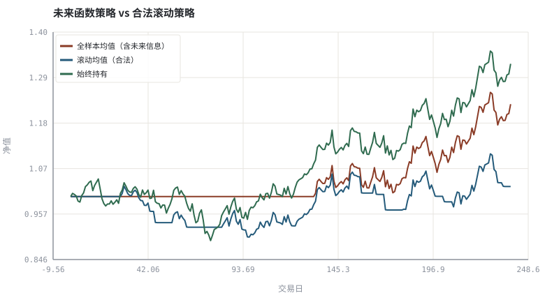
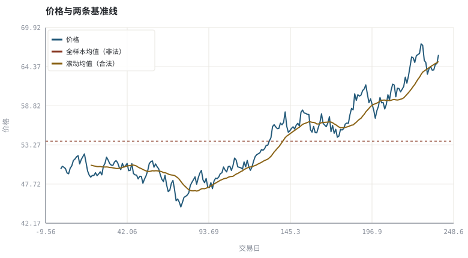

第 20 章用代码画图：SVG 图与看图陷阱
把「一张图」变成可复现的产物，同时堵住最常见的数据泄漏。
本章位置：第三阶段以「如何可靠地画图与看图」收尾；第 21 章 · 因子、CAPM 与 Fama-French 起进入第四阶段，把「规律」升级为可检验的因子假设。
未来函数就是训练集里混进了测试集标签。f(history_up_to_t) 是类型级约束，t+1 成交是时间级约束，样本外切分是评估级约束——三层都得有。
- 能用纯标准库生成可提交、可离线查看的 SVG 图表。
- 能识别并复现未来函数（look-ahead bias）造成的虚假超额收益。
- 能说明全样本统计量与滚动统计量的差别。
- 能把坐标、复权、周期三项设置写进实验记录。
§知识点地图
每个知识点都配了 1～2 个扩展学习链接；本章完整资源清单见 扩展学习。
| # | 知识点 | 扩展学习 | 状态 |
|---|---|---|---|
| 1 | SVG 与文本矢量图 | MDN · SVG · Python 3 文档 | 正文已覆盖 |
| 2 | 零依赖绘图 | MDN · SVG · Look-ahead bias | 正文已覆盖 |
| 3 | 图层与坐标 | Adjusted closing price · OHLC chart | 正文已覆盖 |
| 4 | 全样本均值泄漏 | MDN · SVG · Look-ahead bias | 正文已覆盖 |
| 5 | 滚动窗口与因果性 | MDN · SVG · Look-ahead bias | 正文已覆盖 |
| 6 | 信号与下一根成交 | Volume (finance) · OHLC chart | 正文已覆盖 |
| 7 | 未来函数 | Look-ahead bias · Backtesting | 正文已覆盖 |
| 8 | 可复现的实验记录 | MDN · SVG · Look-ahead bias | 正文已覆盖 |
§20.1为什么用 SVG 而不是截图
本书所有插图由 tools/chart.py 生成：输出是文本 SVG，不弹窗、不依赖 GUI、不需要第三方包，能进 Git、能 diff、能在浏览器里缩放不失真。对教材而言，图与代码同源意味着改一个参数就能重画一遍，而不是留下一张无法复核的截图。
- 数据层：合成行情 → 计算指标 → 得到数值结论（打印）。
- 图层：折线 / 柱 / 散点 / 参考线 / 图例统一渲染。
- 校验层：XML 解析检查 SVG 合法、脚本批量运行检查数值。
- 文档层：参数区、随机种子、生成命令都写在页面上。
§20.2未来函数：最容易被忽略的 bug
一段看起来无害的归一化，就足以毁掉回测：
错误: z_t = (P_t − mean(P_1 … P_T)) / std(P_1 … P_T) ← 用到了 T 时刻才知道的量
正确: z_t = (P_t − mean(P_(t−w+1) … P_t)) / std(P_(t−w+1) … P_t)
全样本均值、全样本分位数、全样本最大值、以及「在最低点画买入箭头」都属于同一类错误：把未来信息编码进了 t 时刻的特征。真实交易中你只有 prices[:t+1]。
§20.3三道防线
| 防线 | 做法 | 检查方式 |
|---|---|---|
| 时间切分 | 特征只用 prices[:t+1] | 把 t 之后的数据全删掉，结论应不变 |
| 执行延迟 | t 时刻信号在 t+1 成交 | 统计信号与成交的时间戳差 |
| 样本外隔离 | 调参与评估用不同数据段 | 比较样本内/外夏普（第 28 章） |
把「数据可用时刻」作为每个字段的元数据。任何特征函数签名写成 f(history_up_to_t)，就能从类型上阻止大部分未来函数。
§Python 分析实例
实验 20-1 · 全样本均值泄漏如何制造虚假超额收益
#!/usr/bin/env python3
# -*- coding: utf-8 -*-
"""对比「全样本均值」与「滚动均值」两种信号，统一在下一根成交，量化差距。
数据为合成数据或模型示意，仅用于教学，不构成投资建议。
"""
from __future__ import annotations
import math
import pathlib
import random
import statistics
import sys
sys.path.insert(0, str(pathlib.Path(__file__).resolve().parents[3] / "tools"))
from chart import Chart, candlestick, heatmap, BLUE, RED, GREEN, AMBER
FIG = pathlib.Path(__file__).resolve().parents[1] / "fig"
FIG.mkdir(exist_ok=True)
random.seed(7)
# ---- 参数区 ----
N = 240
START, DRIFT, VOL = 50.0, 0.0006, 0.014
W = 20 # 合法滚动窗口
FEE = 0.0005 # 换仓成本
# ---- 计算与作图 ----
rng = random.Random(7)
px, prices = START, []
for _ in range(N):
px *= (1 + rng.gauss(DRIFT, VOL))
prices.append(px)
full_mean = statistics.fmean(prices) # 非法：用到整段样本
rolling = [None] * N
for i in range(W - 1, N):
rolling[i] = statistics.fmean(prices[i + 1 - W:i + 1])
sig_bad = [1 if prices[i] > full_mean else 0 for i in range(N)]
sig_ok = [1 if rolling[i] is not None and prices[i] > rolling[i] else 0 for i in range(N)]
def backtest(sig):
v, path_, trades = 1.0, [1.0], 0
for i in range(N - 1):
r = prices[i + 1] / prices[i] - 1
if i > 0 and sig[i] != sig[i - 1]:
trades += 1
v *= (1 - FEE)
v *= (1 + sig[i] * r)
path_.append(v)
return path_, trades
bad_px, bad_trades = backtest(sig_bad)
ok_px, ok_trades = backtest(sig_ok)
buy_px, _ = backtest([1] * N)
c = Chart(FIG / "20-lookahead.svg", "未来函数策略 vs 合法滚动策略", xlabel="交易日", ylabel="净值")
c.line(range(N), bad_px, RED, label="全样本均值（含未来信息）")
c.line(range(N), ok_px, BLUE, label="滚动均值（合法）")
c.line(range(N), buy_px, GREEN, label="始终持有")
print("净值图:", c.save())
m = Chart(FIG / "20-mean.svg", "价格与两条基准线", xlabel="交易日", ylabel="价格")
m.line(range(N), prices, BLUE, label="价格")
m.hline(full_mean, RED, label="全样本均值（非法）")
xr = [i for i in range(N) if rolling[i] is not None]
m.line(xr, [rolling[i] for i in xr], AMBER, label="滚动均值（合法）")
print("基准图:", m.save())
print("终值 未来函数=%.3f 滚动=%.3f 持有=%.3f | 换仓 %d / %d 次 | 全样本均值=%.3f" %
(bad_px[-1], ok_px[-1], buy_px[-1], bad_trades, ok_trades, full_mean))操作：先跑一遍记录三条终值；再把 DRIFT 改成 0，观察「未来函数优势」是否依然显著。 预期与判读：全样本均值把整段行情的中心位置提前告诉了策略，所以非法信号的净值明显高于合法的滚动信号（本例约 1.23 对 1.03），差距来自信息泄漏而非技能。注意它仍可能低于「始终持有」：择时本身不必然占优，这正说明回测必须同时给多个基准。合法信号只能用 prices[:t+1]。
改参数看趋势：把 W 从 20 调到 60，合法策略的信号变少、更平滑，但绝不会因此获得未来信息。 文件位置：part3/20-chart-pipeline/code/20-lookahead.py


代码块右上角可一键复制；仓库里的 code/*.py 由 tools/extract_code.py 从这些代码块自动抽取。脚本只用标准库、固定 random.seed(7)，运行后写出 fig/*.svg；批量运行用 ./tools/run_python.sh。
§本章参考资料
按本章知识点挑选的精读资料；更多检索入口见 扩展学习。
MDN · SVG
工具 · 参考资料本书自绘图表所用矢量格式参考
怎么用：本书自绘图表所用矢量格式参考https://developer.mozilla.org/en-US/docs/Web/SVG
Look-ahead bias
百科 · 参考资料用到未来信息的隐形数据泄漏
怎么用：前视偏差的定义与常见来源https://en.wikipedia.org/wiki/Look-ahead_bias
§常见误区
- 用全样本均值/分位数/最大值做归一化或阈值。
- 在信号产生的同一根 K 线收盘价成交。
- 把「事后标出的最低点」写进策略条件。
- 图上标注了参数却没写数据复权与坐标设置，换设备无法复现。
§习题与思考
- 列举三种「看起来无害」的全样本统计量，并说明如何改成滚动版本。
- 在示例里加入 t+2 成交，观察合法策略与未来函数策略的差距变化。
- 给 SVG 生成脚本补一个 XML 解析校验，说明它能挡住哪类错误。
§扩展学习
以下资料按本章知识点挑选，可直接精读或对照真实数据；知识点地图里每一条也挂了 1～2 个直达链接。
- MDN · SVG（工具）：本书自绘图表所用矢量格式参考
MDN · SVG - Look-ahead bias（百科）：用到未来信息的隐形数据泄漏
Look-ahead bias - Matplotlib（工具）：本书 SVG 自绘替代方案的成熟绘图库
Matplotlib - Python 3 文档（工具）：本书脚本的语言与标准库权威参考
Python 3 文档
继续扩展：在 Google Scholar 检索本章相关论文 · 在 MIT OCW 检索配套课程 · 在 arXiv 检索预印本 · 全书参考资源总表 · 附录 A 速查与链接总表
§延伸阅读与内链
- 第 26 章 · 事件驱动回测引擎：从信号到成交 回测引擎的时间链；第 28 章 · 过拟合、多重检验与滚动样本外 样本外与多重检验；第 25 章 · 数据管道：对齐、公司行动与幸存者偏差 point-in-time 数据。